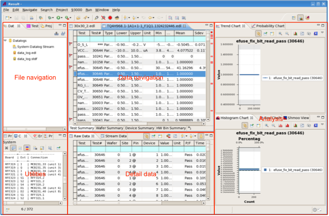

Result perspective overview
The Result perspective contains views that let you display and analyze both saved data logs and the system data log stream. It is intended to be used for evaluating tests and examining their results for possible causes of problems and other particularities.
In its default layout, the perspective is divided into five areas:

In general, you work from left to right:
- File navigation: This area contains the Data Log Explorer, into which you load the data logs that you want to work with.
- Utilities: This area provides feedback such as error messages and basic information on loaded log files in views such as the console or the error log.
- Data navigation: Loaded data logs that you open are displayed here in the form of summary tables. You can select rows in the tables to display in the detail data and results sections
- Detail data: This section displays selected the underlying data of selected table entries in tabular form.
- Analysis: In the analysis section, selected rows from the data navigation tables are displayed in various graphical or tabular representations, each of which makes it easy to see certain properties of the data.
Functional changes
- Introduced in SmarTest 7.2.0